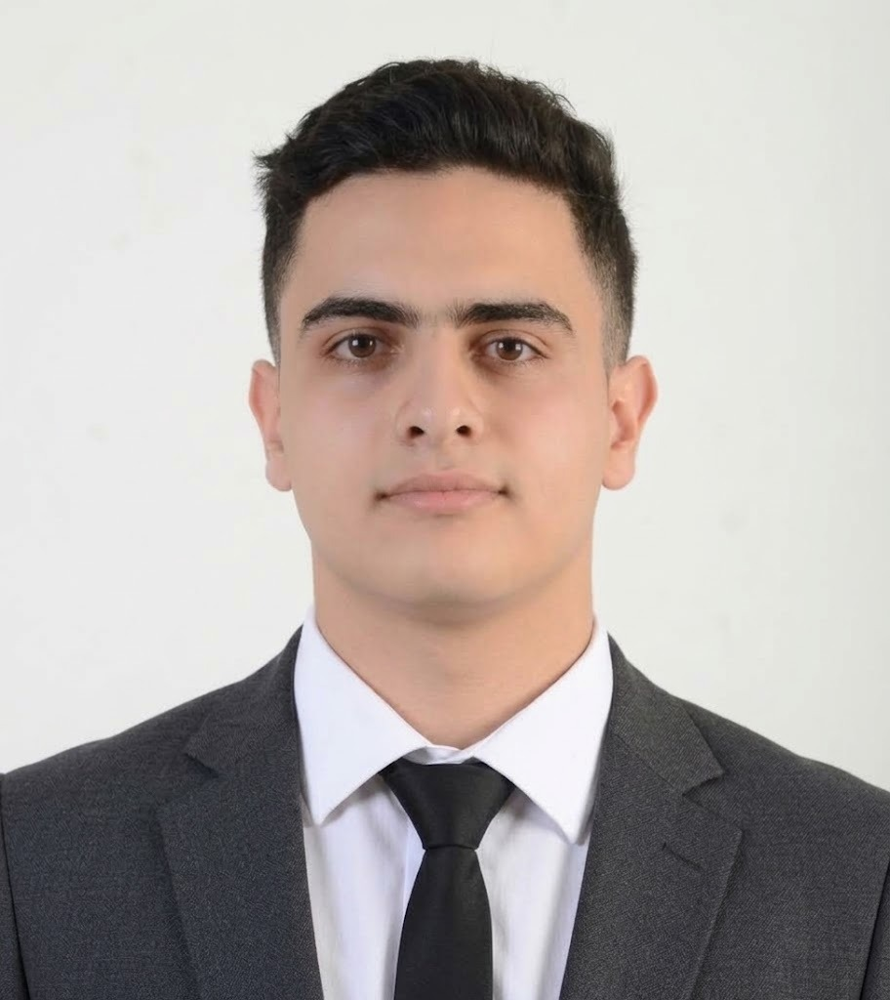

CS student at Amman Arab University and learner at 42 Amman. I spend most of my time close to the metal — process management, memory, file descriptors in C — and the rest building backend systems that hold up under real constraints. 3.96 GPA, competitive programmer, and currently working toward embedded/edge AI as a long-term specialization.

42 School projects, competition entries, and university work — in roughly the order they got harder.
From memory management up to AI-driven systems.
Milestones 0 through 5 complete: ft_printf, get_next_line, pipex, push_swap, so_long, cub3D, Webserv, and Minishell — plus C++ Modules through advanced STL. No lectures, no shortcuts.
Led the build of an AI platform that adapts CP learning roadmaps per user based on behavioral analysis.
Held up under real time pressure against 155 competitors.
3.96 GPA. ICPC participant. Coursework spans algorithms, databases (ER/EER modeling, SQL, normalization through 3NF), and software engineering.
Sessions on quantum physics and the future of computing.
Open to engineering roles, internships, and collaborative builds.